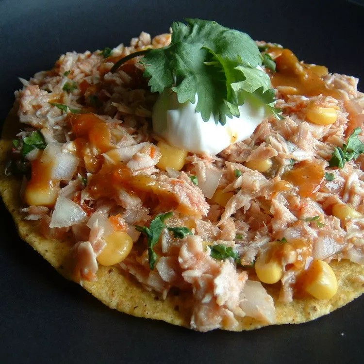

Tuna Lime Tostada

This refreshing tuna tostadas recipe is great for a hot summer day! White albacore tuna, onion, and corn are mixed with the flavors of lime, cilantro, and piquant hot sauce. Serve on a tostada or in a taco shell!
Ingredients
3 (5 ounce) cans solid white tuna packed in water, drained
½ (10 ounce) can sweet corn, drained
½ onion, finely chopped
1 bunch cilantro, finely chopped
2 tablespoons salsa
1 lime, juiced
hot sauce to taste
salt and pepper to taste
sour cream, for topping
8 tostada shells
Instructions
- With a fork, flake tuna into a bowl. Stir in corn, onion, cilantro, salsa, and lime juice. Season with a few dashes of hot sauce, and salt and pepper to taste. Stir to combine, then spoon onto tostada shells. Top each tostada with a dollop of sour cream and a bit more hot sauce.